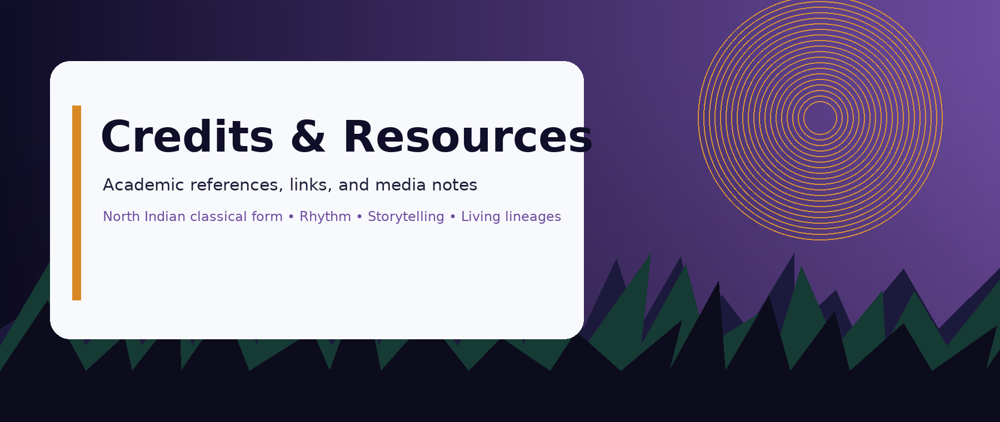

Credits and academic references
This page lists all sources used in this website and includes examples of the required link types for the final exam. All images used in this site are original graphics created by Abhimanyu Gupta for this project.
Image credits
- images/hero-home.png, original digital banner created by Abhimanyu Gupta, 2025.
- images/hero-detail.png, original digital banner created by Abhimanyu Gupta, 2025.
- images/hero-form.png, original digital banner created by Abhimanyu Gupta, 2025.
- images/hero-credits.png, original digital banner created by Abhimanyu Gupta, 2025.
- images/section-rhythm.png, original decorative graphic created by Abhimanyu Gupta, 2025.
- images/section-abhinaya.png, original decorative graphic created by Abhimanyu Gupta, 2025.
- images/section-costume.png, original decorative graphic created by Abhimanyu Gupta, 2025.
- images/badge-rhythm.png, original badge graphic created by Abhimanyu Gupta, 2025.
- images/badge-story.png, original badge graphic created by Abhimanyu Gupta, 2025.
- images/badge-lineage.png, original badge graphic created by Abhimanyu Gupta, 2025.
Text and topic sources
The historical and technique summaries in this site were informed by the following general educational references. These are included for classroom credit.
- Encyclopaedia Britannica. “Kathak.” Accessed December 7, 2025. Britannica entry
- Sangeet Natak Akademi (Government of India). Information on Indian performing arts institutions. Accessed December 7, 2025. SNA website
- Cultural India. “Kathak Dance.” Accessed December 7, 2025. Cultural India overview
Required link examples
- External link: Kathak on Britannica
- Internal link: Home page
- Within-page (fragment) link: Jump to mini site map
- Email link: agupta14@stumail.jccc.edu
Mini site map
- Home - broad overview and pillars
- History & Technique - rhythm, abhinaya, gharanas, stage culture
- Practice Planner Form - required form elements
- Credits - sources and required link examples
- Gharanas section - extra fragment example
Final checklist
- All pages link to the external stylesheet (styles.css).
- Top and bottom navigation uses unordered lists on each page.
- Liquid layout is centered with #wrapper and percentage sizing.
- Typography uses em sizing.
- Images are flexible and credited.
- Form includes all required inputs with matching labels.
- All required link types are demonstrated on this page.